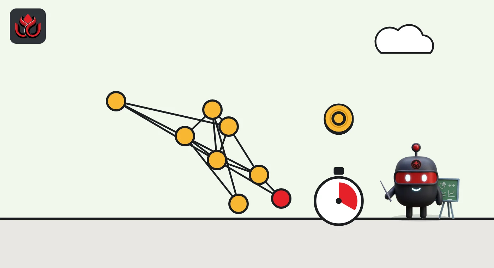
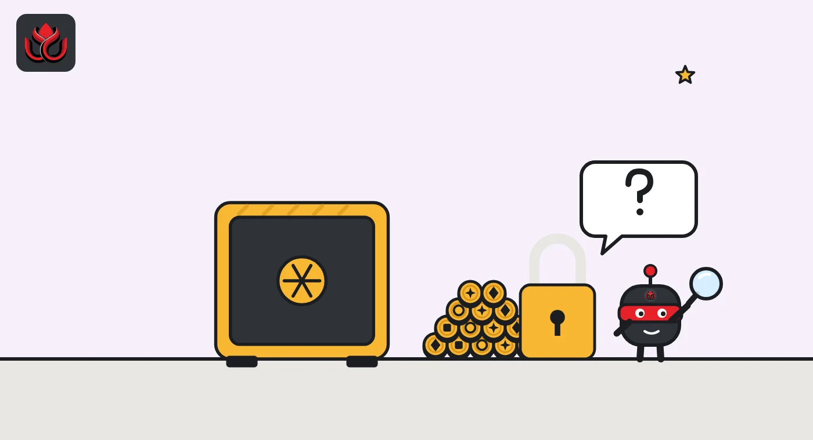

Circle's Arc is live with Visa and BlackRock as validators. Why mint 10 billion ARC?
Circle opened Arc, its own blockchain where every fee is paid in USDC, on September 16. It also minted 10 billion ARC tokens, yet says there is no promise of a public token launch.
Key points
- Circle's own blockchain, Arc, opened to the public on September 16, 2026, and every fee on it is paid in USDC.
- Its 11 founding validators include BlackRock, DTCC, ICE, Mastercard and Visa, joining in phases.
- Circle minted 10 billion ARC tokens but says that is not a promise of a public launch, and no allocation has been published.
Arc opens to the public
Circle, the company behind the USDC stablecoin, opened the public mainnet of its Arc blockchain on September 16, 2026, with 11 founding validators that include BlackRock, Mastercard and Visa. It also minted 10 billion ARC tokens, while saying that is not a commitment to launch them publicly. The date had been set in advance on the Arc blog. Arc is a layer 1 network, meaning a base blockchain rather than one built on top of another chain.
Arc's launch post calls the network the "Economic OS for the internet". Before the public launch, more than 100 ecosystem and institutional builders were working on a private mainnet, according to the Arc blog. The launch post named lending markets Aave and Morpho, and trading venues including Aero, Uniswap, 0x, 1inch, Curve and OpenSea, among the projects on the network.
How Arc works
Arc is built around stablecoins. Users pay network fees, known as gas, in USDC rather than in a volatile token. Arc says fees are designed to be predictable and that transactions reach finality, meaning they are settled and cannot be reversed, in under a second. The network is compatible with the Ethereum Virtual Machine, so developers can reuse Ethereum code and tools.
For now, Arc is a permissioned network. A fixed group of approved validators, the computers that confirm transactions, runs it. The launch post lists 11 founding validators: BlackRock, DTCC, Galaxy, ICE, Mastercard, MoneyGram, SBI Group, Standard Chartered, Sumitomo Corporation, Visa and Worldpay. They will join in phases. Arc says it is exploring a move from this proof-of-authority model to proof of stake, where token holders help secure the network, in 2027.
The public testnet opened on October 28, 2025. Developer tools at mainnet launch include Arc Studio, an onchain coding agent that turns plain-language descriptions into working prototypes, and App Kits, a set of software kits. Two kits were added at launch: Onramp Kit, for funding apps with USDC from bank money, and Earn Kit, for in-app lending through protocols such as Morpho.

Why 10 billion ARC tokens exist
The token drew the most attention. Circle completed a genesis mint, meaning the first creation of tokens, of 10 billion ARC, the launch post said. It described the mint as a technical milestone and said it is not a commitment to launch ARC publicly. No sale has been announced, and Arc has not published how the 10 billion tokens would be allocated.
It did not come out of nowhere. On May 11, 2026, Arc published a whitepaper on what it calls its native coordination asset. It said ARC was not launched and that no decision had been made on its development or functionality. The paper set out three possible roles: securing the network under a future proof-of-stake model, voting on economic settings such as fees, inflation and burns, and giving users and builders benefits such as fee reductions.
USDC would stay the fee token. Under the design in the whitepaper, fees paid in USDC would be converted into ARC and routed to validators and stakers, with a portion burned.
What is still missing
Several pieces are still missing. Opt-in privacy features, which would let users shield balances, transactions and counterparties while keeping them auditable, are described as upcoming, with scope and timing subject to change. The move to proof of stake is being explored for 2027. The remaining founding validators still have to join.
Arc's own disclaimers are blunt. The network is operated through Arc Network Services LLC, which says it provides software services only. Arc says it has not been reviewed or approved by the New York State Department of Financial Services or any other regulator, that features may change or be canceled, and that there is no recourse for transaction errors.

What it means for USDC
A Circle-run chain where every fee is paid in USDC creates new demand for the token. It also gives Circle a venue it controls for products such as tokenized funds and payments, rather than relying only on networks run by others.
USDC is already central to exchanges. Coinbase, Circle's largest distribution partner, said in its Q3 2026 Form 10-Q that average USDC held in its products reached an all-time high during 2026 and that it renewed its arrangement with Circle on the same terms. Coinbase booked $306.9 million in stablecoin revenue in the quarter, compared with $324.5 million a year earlier.
Regulators are watching too. On October 14, 2026, the European Banking Authority classified USDC as the first significant e-money token under the EU's MiCA rules. From November 12, the EBA takes over direct supervision of USDC's reserves, own funds and liquidity in the EU.
Fees in USDC also change the experience for users. On most chains, a new user must first buy the network's own token before sending anything. On Arc, someone who holds USDC can pay fees with the same dollars they are moving.
Timeline
Arc public testnet launches
Arc publishes the ARC whitepaper
Public mainnet goes live; genesis mint of 10 billion ARC
EBA classifies USDC as a significant e-money token
EBA supervision of USDC begins
Arc explores a move to proof of stake
LC Insight analysis
This section is our reading of the facts above, not a statement of fact.
- We think Arc is Circle's bid to keep more of the value USDC creates. Most USDC activity runs on chains like Ethereum and Solana, where Circle earns nothing from fees.
- The validator list is the real pitch. DTCC, ICE and Visa signal a chain built for regulated finance, not for retail traders chasing the next coin.
- Minting 10 billion tokens with no launch plan is an invitation to speculate. We expect markets to treat every hint about allocation or the 2027 proof-of-stake move as news.
What's next
- Any announcement on ARC token allocation or public launch
- When the remaining founding validators join
- Progress on the proof-of-stake move in 2027
- USDC supply on Arc compared with other chains
Disclaimer. This article is based on public information and the sources listed below as of the update time shown. It is for information only and is not investment, legal or tax advice. Figures may change as companies and authorities publish new data.
Sources
- Arc, Arc mainnet is live: the Economic OS for the internet (September 16, 2026)
- Arc, Arc mainnet goes live on September 16, 2026
- Arc, Introducing the ARC whitepaper (May 11, 2026)
- Arc, Circle launches Arc public testnet (October 28, 2025)
- Coinbase, Form 10-Q for Q3 2026
- European Banking Authority, EBA classifies USDC as the first significant e-money token (October 14, 2026)